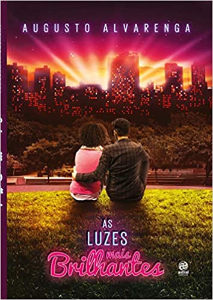
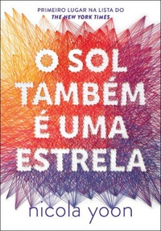
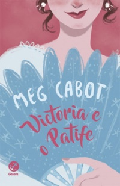
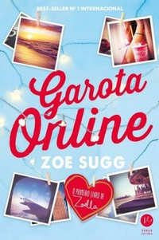

|  |
As luzes mais Brilhantes
Autor: Augusto Alvarenga
Julién passou por uma fase terrível e seu coração ainda está despedaçado. Agora, ele decidiu viver um dia após o
outro, tentando compreender as particularidades dessa cidade enorme que é São Paulo, onde ele vive, mas se sente
sozinho. Porém, um dia, quando cruza a Avenida Paulista de bicicleta, ele tromba com Bruna, a aprendiz de cineasta
mais diferente que já viu. Por causa desse momento tão inesperado - e quase trágico -, eles decidem tomar um café.
E, depois desse café, nada mais foi como antes. Talvez algo possa surgir entre as luzes mais brilhantes da Paulista e
repetidos cafés no Starbucks. Talvez eles – e os leitores – possam descobrir se e existe ou não amor em SP.

|
 |
O Sol Também é uma estrela
Autora: Nicola Yoon
Natasha: Sou uma garota que acredita na ciência e nos fatos. Não acredito na sorte. Nem no destino. Muito menos
em sonhos que nunca se tornarão realidade. Não sou o tipo de garota que se apaixona perdidamente por um garoto
bonito que encontra numa rua movimentada de Nova York. Não quando minha família está a 12 horas de ser
deportada para a Jamaica. Apaixonar-me por ele não pode ser a minha história.
Daniel: Sou um bom filho e um bom aluno. Sempre estive à altura das grandes expectativas dos meus pais. Nunca me
permiti ser o poeta. Nem o sonhador. Mas, quando a vi, esqueci de tudo isso. Há alguma coisa em Natasha que me
faz pensar que o destino tem algo extraordinário reservado para nós dois.
O Universo: Cada momento de nossas vidas nos trouxe a este instante único. Há um milhão de futuros diante de nós.
Qual deles se tornará realidade?

|
|  |
Victória e o Patife
Autora: Meg Cabot
Neste romance histórico juvenil escrito pela autora de “O diário da princesa”, acompanhamos a trajetória de Victoria.
Criada pelos tios na Índia, ela é enviada a Londres aos 16 anos para conseguir um marido. Mas é na longa viagem até
a Inglaterra que a jovem encontra o amor, na figura de Hugo Rothschild, o nono Conde de Malfrey. Tudo estaria ótimo
se não fosse a insuportável interferência do capitão do navio, Jacob Carstairs. Por que ele não pode confiar na
escolha de Victoria? Por que ele não a deixa em paz? Estaria Hugo escondendo algo?

|
 |
Não Conte Nosso Segredo
Autora: Julie Anne Peters
Com o namorado dos sonhos, o cargo de Presidente do Conselho Estudantil e a chance de ir para uma Universidade
de Ivy League, a vida não poderia estar mais perfeita para Holland Jaeger. Ao menos, é o que parece. Até que Ceci
Goddard chega na escola e muda tudo. Ceci e Holland têm sentimentos que não conseguem esconder, mas como
todos ao redor vão lidar com este novo romance?
Entre intrigas, preconceitos e a não aceitação dos pais, Ceci e Holland lutam para manter-se juntas, mas o amor delas
pode não ser tão forte quanto as críticas da sociedade...
Não conte nosso segredo é o primeiro livro da autora Best-seller no New York Times, que promete emocionar leitores
de todas as idades e gêneros.
|
|
A Seleção
Autora: Kiera Cass
Nem todas as garotas querem ser princesas. America Singer, por exemplo, tem uma vida perfeitamente razoável, e se
pudesse mudar alguma coisa nela desejaria ter um pouquinho mais de dinheiro e poder revelar seu namoro secreto.
Um dia, America topa se inscrever na Seleção só para agradar a mãe, certa de que não será sorteada para participar da competição em que o príncipe escolherá sua futura esposa.
Mas é claro que seu nome aparece na lista das Selecionadas, e depois disso sua vida nunca mais será a mesma...
|
 |
Garota Online
Autora: Zoe Sugg
Com o nickname Garota Online, Penny escreve um blog no qual desabafa seus sentimentos mais íntimos sobre
amizade, meninos, os dramas do colégio, sua família maluca e os ataques de pânico que começaram a dominar
sua vida. Quando as coisas vão de mal a pior, sua família a leva para Nova York, onde ela conhece Noah,
um garoto lindo que toca guitarra, e com quem ela parece ter muito em comum. De repente, ela percebe que
está se apaixonando — e escreve sobre cada momento dessa história em seu blog, de maneira anônima. Só que
Noah também tem um segredo, que ameaça arruinar o disfarce de Penny para sempre.
|